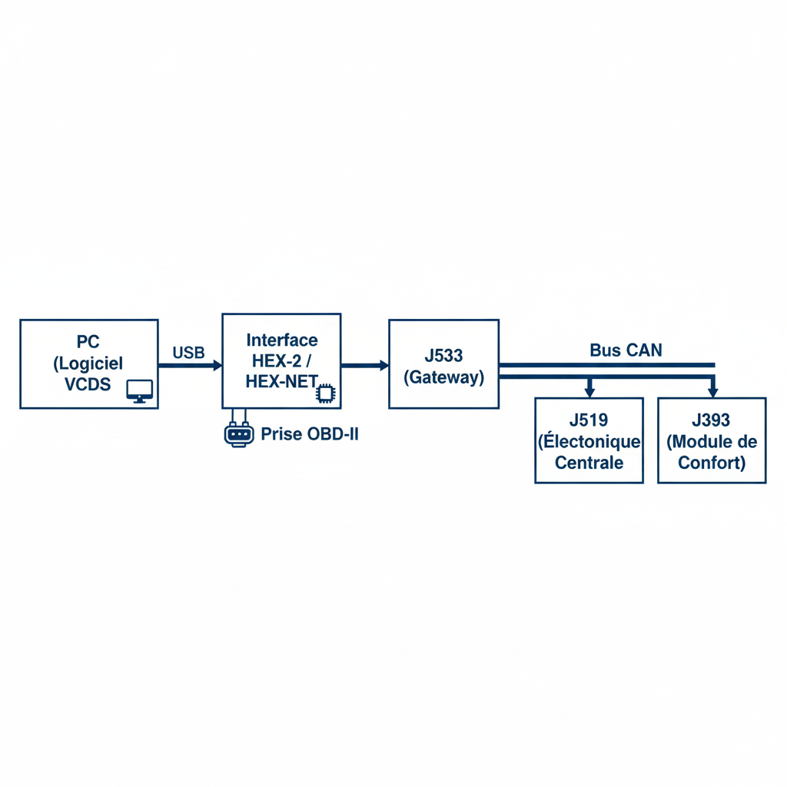
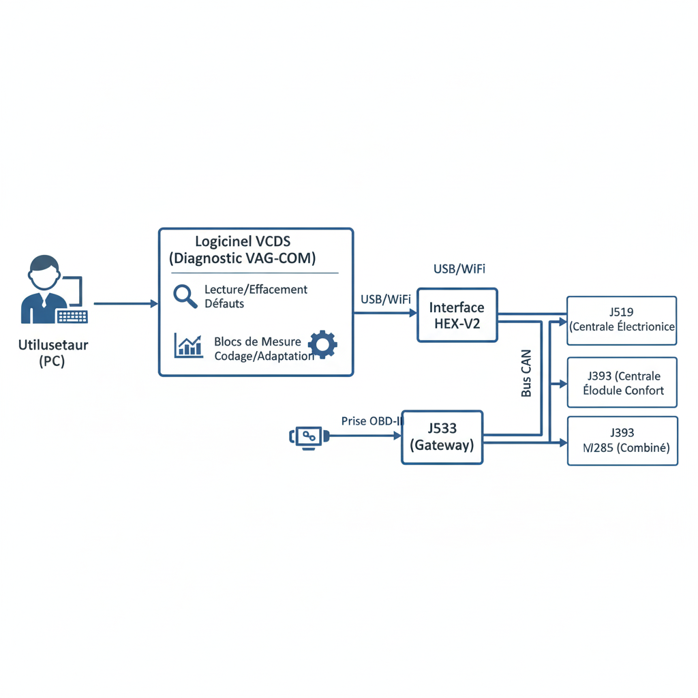
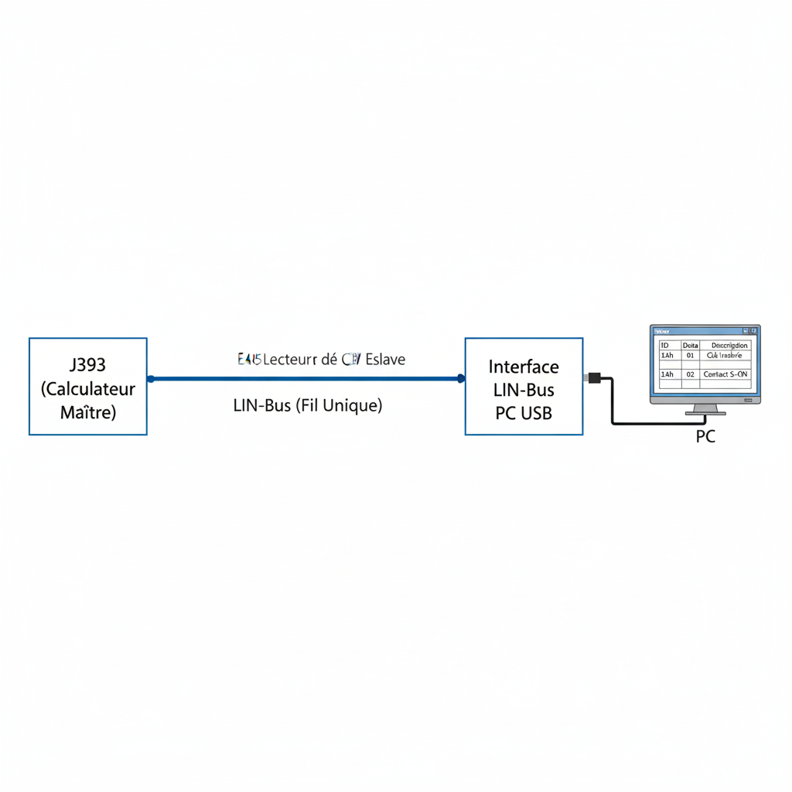

Sert de passerelle intelligente entre le réseau de bord du véhicule (CAN Haute Vitesse ou Basse Vitesse) et le protocole USB d'un PC. Il ne se contente pas de relier les fils, il gère la synchronisation des messages.
Multiprotocole (ISO 15765-4 CAN, ISO 9141-2, KWP2000). Supporte le mode "Dual CAN" pour interroger les différents réseaux de la maquette.
C'est l'outil "clé en main" pour le technicien. Sans lui, aucune communication avec le logiciel VCDS n'est possible pour diagnostiquer les pannes injectées.

Émulateur d'outil de diagnostic constructeur. Il permet de "discuter" avec chaque calculateur individuellement.
Utilisé pour le TP "Eigendiagnose". Vérifie si le calculateur J519 détecte correctement l'appui sur une pédale ou un bouton, et efface les pannes après réparation.
Système d'acquisition de données à haute vitesse, agissant comme un oscilloscope et un multimètre graphique.
Échantillonnage analogique jusqu'à 1 MHz.
Signaux électriques bruts. On y voit la différence de tension entre CAN-High (3.5V en récessif) et CAN-Low (1.5V en dominant) pour le bus propulsion.
Crucial pour visualiser les pannes physiques (Pannes 8, 9, 10 : courts-circuits au + ou à la masse). On voit la forme du signal se déformer ou s'aplatir à l'écran.

Analyseur de protocole réseau pur. Contrairement au VCDS qui pose des questions, cet outil "écoute" tout ce qui se dit sur le bus sans interruption.
CAN 2.0A et 2.0B.
Étude de la logique binaire. Par exemple, voir l'octet 3 du message ID 531h changer de valeur passant de 00 à 01 lorsqu'on active le clignotant.
Interface spécifique pour les réseaux secondaires (plus lents et moins chers que le CAN).
Maître/Esclave (Master/Slave). Sur le banc, le J393 est le maître et l'E415 (Neiman) est l'esclave.
Trame de 13 bits (Header) suivie de 1 à 8 octets de données.
Utilisé pour démontrer comment une commande simple (comme l'insertion d'une clé dans le Neiman) est transmise au calculateur principal via un fil unique.
